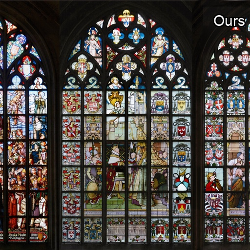
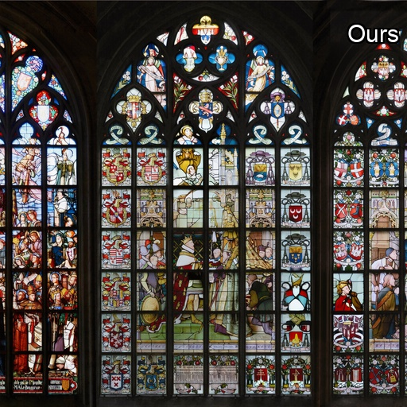

We propose a novel training-free method for inpainting with
off-the-shelf text-to-image models. While guidance-based methods
in theory allow generic models to be used for inverse problems such
as inpainting, in practice, their effectiveness is limited, leading
to the necessity of specialized inpainting-specific models. In this
work, we argue that the missing ingredient for training-free inpainting
is the optimization (guidance) of the initial seed noise. We propose to
optimize the initial seed noise to approximately match the unmasked parts
of the data—with as few as a few tens of optimization steps. We then
apply conventional training-free inpainting methods on top of our
optimized initial seed noise. Critically, we propose two core ideas
to effectively implement this idea:
(i) to avoid the costly unrolling required to relate the initial noise
and the generated outcome, we perform linear approximation; and (ii) to
stabilize the optimization, we optimize the initial seed noise in the
spectral domain. We demonstrate the effectiveness of our method on various
inpainting tasks, outperforming the state of the art.


 
